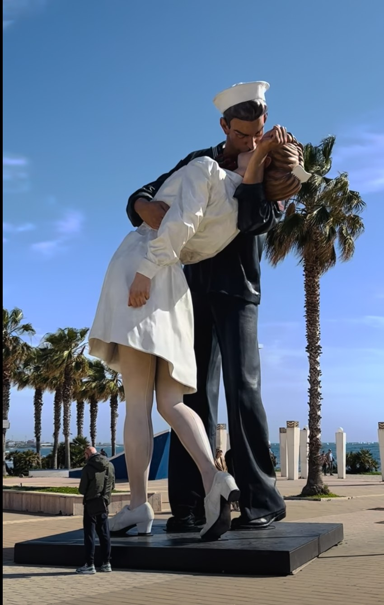
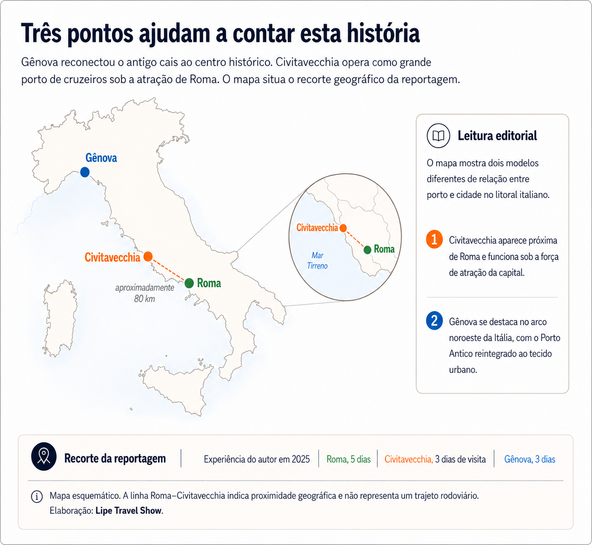
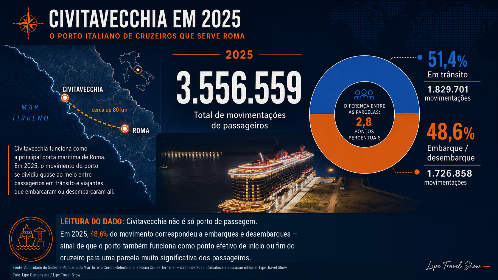
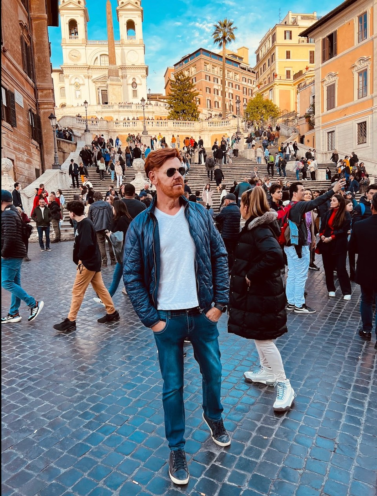
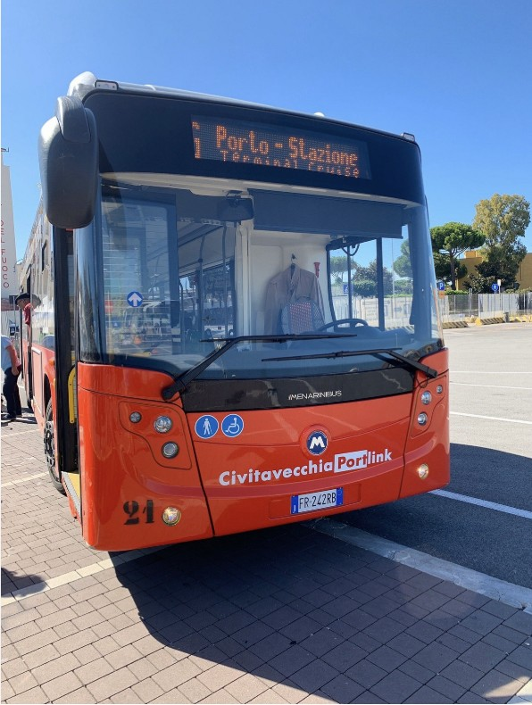
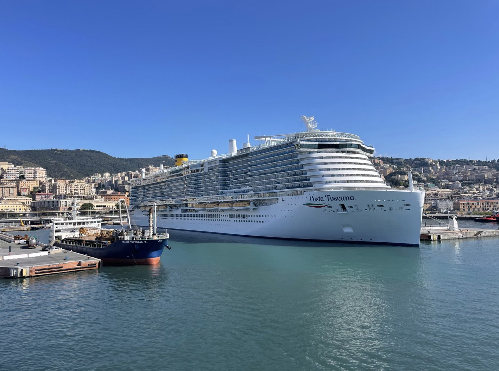
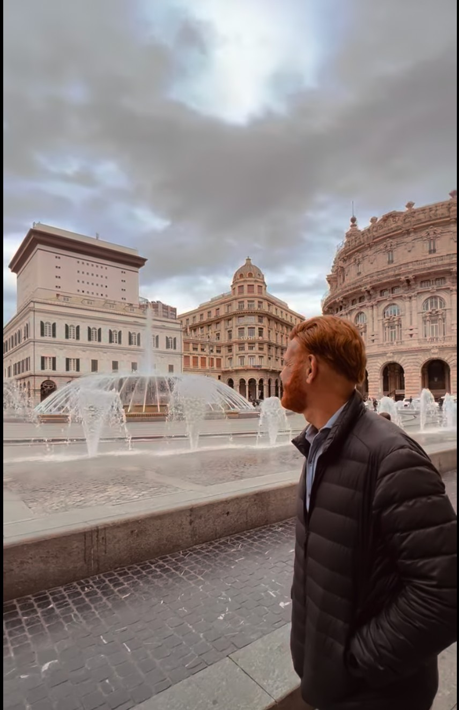
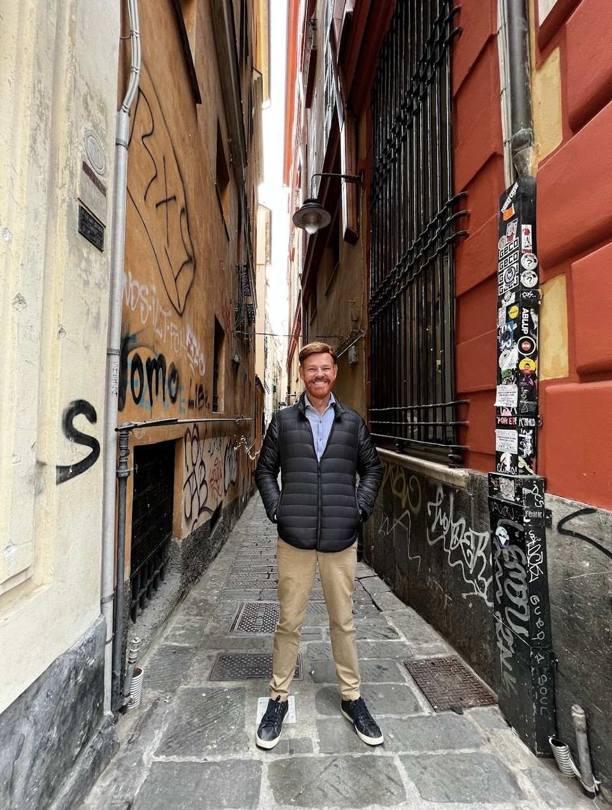
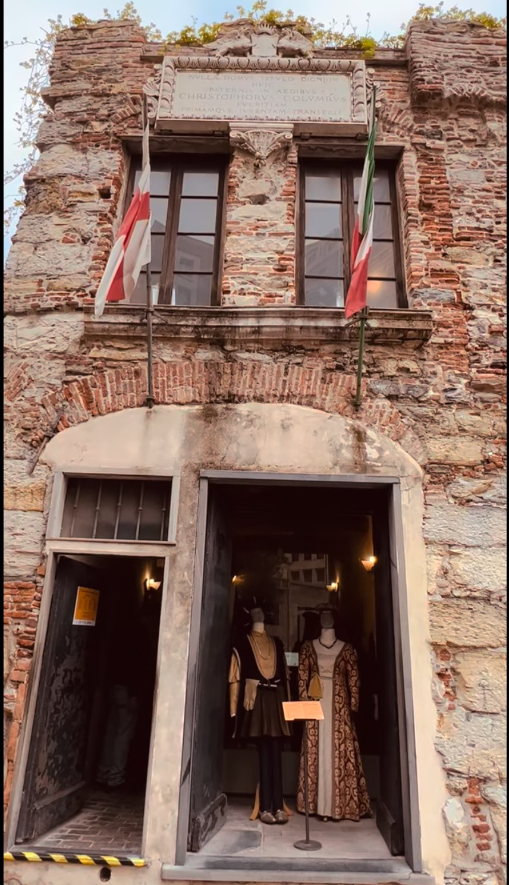
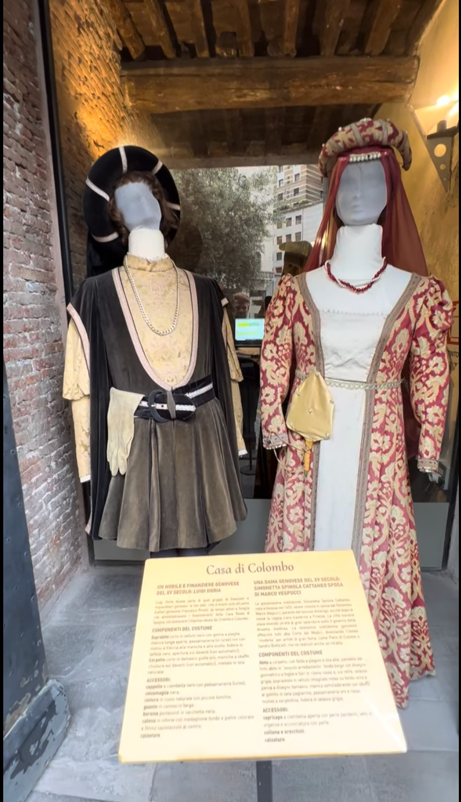

The reverse journey
When I rented a car in Rome and headed toward Civitavecchia, there was no ship waiting for me.
I had no boarding time, no luggage to check and no excursion trying to use every minute before returning to the port. I wanted to discover the city that appears in so many travelers’ itineraries, almost always accompanied by an explanation: that is where the Port of Rome is located.
For three days, I followed the opposite direction from the best-known flow. Instead of arriving at the port looking for the fastest way to reach the capital, I left the capital to discover what existed before the ship.
I found a city shaped by the sea. The marina, brightly colored façades, food, waterfront and port activity coexisted with Forte Michelangelo, built centuries before large cruise ships existed.
I stopped in front of the fortress for a while. On one side stood a structure built to protect the port. On the other, a contemporary city organized to move millions of people quickly. Between them was a story that does not always accompany passengers when they leave for Rome.
Farther along, a sculpture more than eight meters high recreated the kiss between a sailor and a nurse immortalized in Times Square in 1945. Known as Unconditional Surrender or Embracing Peace, the work was installed on Civitavecchia’s waterfront in 2022.1

Also in 2025, I spent three days in Genoa. There, the first impression was different. The port did not feel like a separate space placed before or after the city. Ships, squares, façades, alleyways and historic buildings appeared as parts of the same landscape.
What makes a port stop being merely a place of arrival and departure and become part of the destination?
Map of the feature

Three points help tell this story
Schematic map of Italy. Genoa appears on the country’s northwestern arc. Civitavecchia lies on the Tyrrhenian Sea coast, approximately 80 kilometers northwest of Rome.
The map compares two models of the relationship between port and city: Civitavecchia operates under the gravitational pull of the Italian capital; Genoa reintegrated the Porto Antico into the urban fabric.
Author’s experience in 2025: Rome, five days; Civitavecchia, three days of visits; Genoa, three days.
The line drawn between Rome and Civitavecchia is schematic and does not represent a road route.
Civitavecchia
A city between the quay and Rome
My personal impression explained only part of the story. To understand the scale of the phenomenon, it was necessary to look at who passes through the port — and distinguish those merely calling there from those beginning or ending their journey there.
In 2025, the Port of Civitavecchia handled 3,556,559 cruise passenger movements, a new Italian record. There were 1,829,701 transit passenger movements and 1,726,858 embarkations or disembarkations, known as turnaround. The port received 862 cruise calls.2

Civitavecchia in 2025
The Italian cruise port serving Rome.
Civitavecchia is Rome’s main maritime gateway. It lies on the Tyrrhenian Sea coast, about 80 kilometers from the capital.
In 2025, the port recorded 3,556,559 passenger movements. Of this total, 1,829,701 movements, or 51.4%, were transit passengers. Another 1,726,858 movements, or 48.6%, were embarkations or disembarkations. The difference between the shares was 2.8 percentage points.
Civitavecchia is not only a transit port. The share of embarkations and disembarkations shows that it also functions as an actual starting or ending point for a cruise for a very significant proportion of passengers.
The figures do not correspond to unique visitors to the city. They are port movements. Even so, the split reveals something important: 51.4% were in transit and 48.6% were beginning or ending their sea journey there.
Passengers who begin or end their cruise have a greater chance of arriving the day before, staying after disembarkation or turning a transfer into a short trip.
The challenge may not be to persuade a passenger with only a few hours to choose Civitavecchia over Rome. It may be to reach those who have the freedom to add a night before or after the ship.
Roma
The city everyone seeks
No analysis of Civitavecchia would be fair without considering what lies at the other end of the road.
Rome recorded 22.9 million tourist arrivals and 52.92 million overnight stays in 2025; 12 million arrivals came from abroad.3 The capital is not simply the nearest destination. It is an almost incomparable concentration of symbols, stories and expectations.

It is therefore understandable why so many decisions in Civitavecchia begin with the question “how do I get to Rome?” The port city lives alongside such a powerful neighbor that much of the flow is organized by comparison and urgency.
Between the port and the station
For passengers, this translates into practical choices. Trenitalia operates the Portlink service, combining buses between the cruise terminals and Civitavecchia railway station, where trains depart for Rome. Timetables, fares and boarding points should be confirmed according to the cruise call and terminal used.11

Genoa
When the port belongs to the city again
In Genoa, the logic changes. The Porto Antico was redeveloped and returned to urban life, especially through projects associated with the 1992 Expo.6 The result is a port that begins within the experience of the city itself.

Squares, the aquarium, museums, walkways, the panoramic Bigo lift and the edges of the historic center connect without requiring a physical or symbolic break. The port is not only infrastructure. It is also landscape, promenade and memory.


Christopher Columbus
A maritime memory that remains on land
It was in Genoa that the story of Christopher Columbus took on tangible weight for me. A visit to Columbus’s House, near Porta Soprana, does not offer a grand triumphal monument. Instead, it presents a modest urban landmark, surrounded by the contemporary city but charged with historical meaning.9


The Columbus narrative, combined with the Porto Antico and the historic center, helps explain why Genoa presents itself to travelers as a city in which to stay — not merely a place to board.
Editorial analysis
Five lessons about ports that become destinations
-
Proximity to a major capital is not enough to turn a stay into a habit.
Civitavecchia is close to Rome, but that can reinforce transit if the city’s own narrative does not gain autonomy.
-
Reintegrating the quay into the urban fabric changes visitor behavior.
Genoa shows how restored waterfronts can function as a continuation of the city rather than an isolated strip.
-
Heritage and mobility need to appear together.
Fortress, marina, historic center, station and terminal need to be read as parts of the same experience.
-
Not every port statistic is only about transit.
In Civitavecchia, the share of embarkations and disembarkations indicates a real opportunity to convert traffic into pre- and post-cruise stays.
-
The destination begins when the traveler realizes there is a city before the ship.
That perception depends on urban space, but also on how the story is told.
Practical information
Civitavecchia or Genoa: how much time should you allow?
In Civitavecchia, travel times between the port, station and attractions vary according to the terminal used and conditions on the day; they should therefore be checked with official sources before planning. The same applies to transport tickets, timetables and specific transfers.4
In Genoa, the terminal operator states that the railway station is approximately 500 meters away and the city center one kilometer away. Distances vary by terminal and should also be checked before travel.12
| Situation | Civitavecchia | Genoa |
|---|---|---|
| Short port call | Best suited to those who already know Rome or want to avoid the transfer. | Porto Antico and an introduction to the historic center. |
| Boarding the next day | One night. | One night. |
| Disembarkation without an immediate flight | One afternoon and one night. | One or two nights. |
| Independent trip | One or two days. | Two or three days. |
| Author’s experience | Three days of visits. | Three days. |
The recommendations reflect the author’s experience and editorial assessment. Terminals, fares, timetables and access should be checked before travel.
Epilogue
Before boarding
I did not arrive by ship in either Civitavecchia or Genoa.
I visited both cities because I wanted to know them, not because I needed to pass through them to reach somewhere else. That choice gave me time that many passengers do not have — and perhaps it was precisely that time that made the difference so visible.
In Civitavecchia, I found a city accustomed to moving millions of people. The fortress, marina, façades and waterfront were close to the flow, but not always part of the journey of those passing through.
In Genoa, I found a port that had returned to participating in the city. The quay led to the squares, the caruggi, the palaces and a maritime history that continued far beyond the water.
A port can be merely the place where schedules are checked, luggage is handed over and the next connection is sought. Or it can be the point where we begin to pay attention to the territory that exists before the ship.
Sometimes the journey begins when we stop asking only how to leave — and finally look at the place where we have arrived.
Editorial integrity
How this feature was produced
Methodology, transparency and sources
Trip funding
The trips to Rome, Civitavecchia and Genoa took place in 2025 and were fully funded by the author. There was no press trip, complimentary accommodation, sponsored transport, institutional support, commercial partnership or consideration related to this feature.
Sources and reporting
The feature combines first-hand experience and original photography with official data, public documents, institutional pages and practical information. Statements and information not obtained directly by the author are attributed to their respective sources.
Maps and infographics
Coastlines were derived from the GSHHG database and simplified for editorial reading using digital cartography tools. The maps are schematic and are not intended for navigation. The infographic percentages were calculated from 3,556,559 movements and rounded to one decimal place.
Use of artificial intelligence
Generative AI tools were used to survey and organize sources, develop the initial structure, produce preliminary drafting, prototype maps and infographics visually, and assist with review stages. The final versions were checked, corrected and approved by the author. No photograph included in the feature or visual pieces was generated or modified generatively.
Sources consulted and notes
- Love Civitavecchia — the Kiss Statue.
- Port Authority — 2025 cruise traffic.
- Roma Capitale — 2025 tourism.
- Comune di Civitavecchia — Forte Michelangelo.
- Port Authority — history of the Port of Civitavecchia.
- Porto Antico di Genova — redevelopment history.
- Porto Antico di Genova — 1992 Expo.
- Porto Antico di Genova — restoration of the Bigo.
- Visit Genoa — Columbus’s House.
- Ministero della Cultura — heritage record for Columbus’s House.
- Trenitalia — Civitavecchia Portlink.
- Stazioni Marittime Genova — passenger services.
- GSHHG — global coastline database.
- Basemap / Matplotlib — cartographic processing.